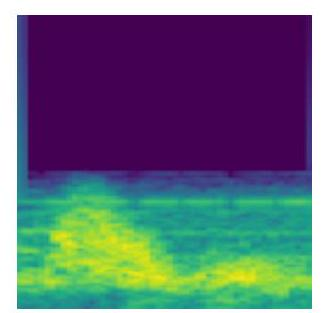
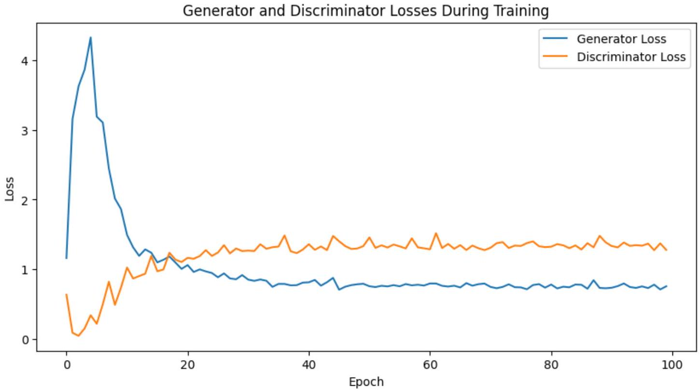
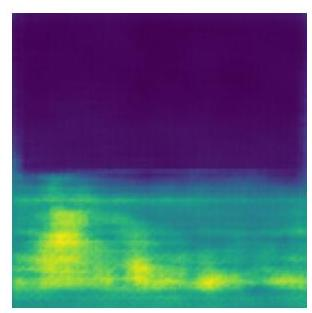

Data Augmentation and Dataset Balancing Techniques Using Generative Adversarial Networks
By Glory Aditya Jauzaulbahi
Abstract
The availability of imbalanced datasets presents a significant challenge in the development of optimal intelligent systems, hindering the performance of classifier models particularly in recognizing minority classes [3]. This research explores the use of generative models, specifically Generative Adversarial Networks (GAN) and Variational Autoencoders (VAE), as data augmentation techniques. Both models generated synthetic data to produce balanced datasets. Evaluation across three classifier models (SVM, Random Forest, KNN) indicated that GAN outperforms VAE in generating high-quality synthetic data, evidenced by a superior Fréchet Inception Distance (FID) score of 0.2249. Notably, the KNN model achieved a 91% accuracy and 90% F1-Score on the GAN-augmented dataset, a significant improvement from its 82% baseline.
1. Introduction
The application of Artificial Intelligence (AI) has become increasingly widespread, particularly in the medical domain where intelligent systems are integrated to provide faster and more accurate disease diagnoses [1]. However, developing effective systems requires high-quality, sufficient data. Data acquisition in real-world scenarios often faces severe obstacles, including modality limitations, rare disease sample scarcity, and strict ethical constraints regarding data privacy [2].
These constraints frequently result in imbalanced datasets, where the majority class significantly outweighs the minority class. Consequently, learning models become biased, leading to high overall accuracy but poor sensitivity for the crucial minority cases [5]. To mitigate these issues, this study investigates the application of Generative Adversarial Networks (GAN) to synthetically augment minority class representations, ensuring a more robust and accurate diagnostic system.
2. Methodology
2.1. Dataset and Preprocessing
The dataset utilized in this research comprises 251 ultrasound audio files sourced from previous academic literature [23]. It exhibits a distinct class imbalance containing 114 instances of arterial data (minority class) and 137 non-arterial instances (majority class).

Figure 1. Flowchart of Proposed Method
To extract important features from the audio data, Short Time Fourier Transform (STFT) was applied to convert the 1D signal data into 2D spectrogram images. These spectrograms were then resized to 128x128 pixels, converted to grayscale, and normalized to a [-1, 1] range to prepare them for neural network training.

Figure 2. Spectrogram Visualization of Arterial Data
2.2. Generative Model Architectures
Two advanced generative architectures were trained to synthesize the minority class: Deep Convolutional GAN (DCGAN) and VAE. The DCGAN architecture relies on a generator that upsamples random noise vectors through transpose convolutional layers, while a discriminator network competes to distinguish real from fake data [10], [13]. Conversely, the VAE maps input data into a lower-dimensional probabilistic latent space and reconstructs it [16]. Both models were tasked with generating 23 synthetic arterial samples to equalize the class distribution.

Figure 3. Generator and Discriminator Losses During Training
2.3. Classification Strategy
Following augmentation, the datasets were split into an 80:20 training and testing ratio. Three distinct machine learning algorithms were deployed: Support Vector Machine (SVM), Random Forest, and K-Nearest Neighbors (KNN). Extensive hyperparameter tuning was conducted via Grid Search cross-validation to identify the optimal configuration for each classifier.
3. Results and Discussion
3.1. Generative Model Performance
The quality of the synthetically generated data was quantified using several metrics, primarily Structural Similarity Index Measure (SSIM) and Fréchet Inception Distance (FID) [18], [20]. As shown in Table 1, while both models demonstrated similar structural preservation (SSIM), the GAN achieved a significantly lower FID score (0.2249) compared to the VAE (0.86). A lower FID score mathematically indicates that the distribution of the synthetic data generated by the GAN is substantially closer to the real-world ground truth data.
| Metric | GAN Results | VAE Results |
|---|---|---|
| SSIM | 0.5655 | 0.5600 |
| FID | 0.2249 | 0.8600 |
| Inception Score | 1.4220 ± 0.1626 | 1.3400 ± 0.2200 |
Visual Comparison: Original vs. Synthetic Data
Figure 4. Original Arterial Spectrogram

Figure 5. GAN Generated Data

Figure 6. VAE Generated Data
3.2. Classifier Enhancements
The implementation of synthetic data yielded distinct impacts on the classification models. On the original imbalanced dataset, the KNN model struggled, achieving an overall accuracy of just 82% and a precision of 70% for the minority class. However, when trained on the GAN-augmented dataset, KNN experienced a remarkable performance surge, reaching 91% accuracy and a 90% F1-Score for arterial data.
Interestingly, the VAE-augmented dataset caused a performance drop across all three models. This decline highlights that VAE tends to produce smoother, less diverse samples that fail to capture the critical variability of the original data distribution [17]. Overall, GAN-generated samples proved immensely superior in providing feature spaces that enhanced model generalization without inducing catastrophic overfitting.
4. Conclusion
This study demonstrates the critical efficacy of Generative Adversarial Networks for addressing class imbalance within medical datasets. Through empirical evaluation, GAN-generated synthetic data consistently outperformed VAE-generated data across structural metrics and downstream classification tasks. The findings emphasize that utilizing advanced generative techniques is a highly viable methodology to build equitable, robust, and highly accurate intelligent diagnostic systems.
References
[1] K. Mikołajczyk, W. Dolar, and L. Bruna, "Deep learning for computer vision: A brief review," Journal of Visual Communication and Image Representation, vol. 54, pp. 72-88, 2019.
[2] Y. Li, Z. Chen, and J. Wang, "Improved GAN for Class Imbalance in Medical Imaging," IEEE Transactions on Medical Imaging, vol. 42, no. 3, pp. 1246-1258, 2023.
[3] A. Fernández et al., "Big data with class imbalance: A review," IEEE Access, vol. 8, pp. 59845-59871, 2020.
[5] H. Zhang, Y. Li, and D. Wang, "Machine learning models for classifying imbalanced class datasets using ensemble learning," IEEE Transactions on Knowledge and Data Engineering, vol. 35, no. 1, pp. 202-212, 2023.
[10] I. J. Goodfellow et al., "Generative Adversarial Networks," 2014. [Online]. Available: https://arxiv.org/abs/1406.2661.
[13] S. Arniriparian et al., "A Fusion of Deep Convolutional Generative Adversarial Networks and Sequence to Sequence Autoencoders for Acoustic Scene Classification," in EUSIPCO, 2018, pp. 977-981.
[16] D. P. Kingma and M. Welling, "Auto-encoding variational bayes," 2013. [Online]. Available: https://arxiv.org/abs/1312.6114.
[18] Z. Wang et al., "Image quality assessment: From error visibility to structural similarity," IEEE Transactions on Image Processing, vol. 13, no. 4, pp. 600-612, 2004.
[20] M. Heusel et al., "GANs trained by a two time-scale update rule converge to a local Nash equilibrium," 2018. [Online]. Available: https://arxiv.org/abs/1706.08500.
[23] D. Santoso, "Peningkatan Kinerja Deteksi Bunyi Doppler Arteri Wasir...", Ph.D. dissertation, Universitas Gadjah Mada, Yogyakarta, Indonesia, 2024.